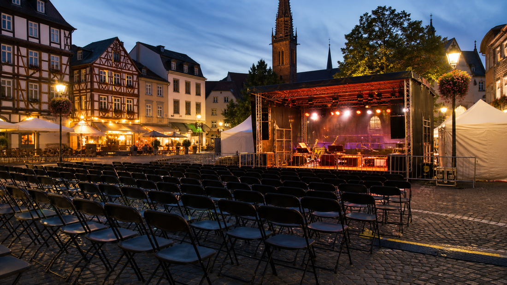

Städte
Nach Stadt lesen
DarmstadtMeldungen aus Verwaltung, Polizei, Mobilität und Stadtgesellschaft. 9 Meldungen.
FrankfurtMeldungen zu Polizei, Verkehr, Wirtschaft, Infrastruktur und öffentlichem Leben. 15 Meldungen.
KasselMeldungen aus Stadt, Landkreis, Polizei, Verkehr und öffentlichem Leben in Nordhessen. 13 Meldungen.

WiesbadenMeldungen aus Landeshauptstadt, Polizei, Stadtleben und öffentlichen Diensten. 10 Meldungen.